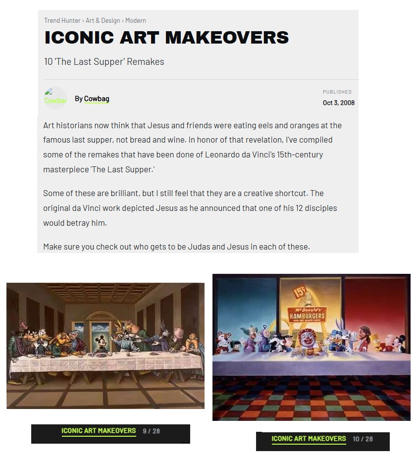

Literature
Ron English, Popaganda: The Art & Subversion of Ron English (San Francisco: Last Gasp, 2001), p. 96. ISBN 1-887128-60-3.

Ron English, Original Grin: The Art of Ron English (Paris: Cernunnos, 2019), p. 256. ISBN 978-2374950938.

David Jenison, “Ron English,” Happy Magazine, August 2001.

Pablo González, “Ron English: el hiperrealista al que McDonald’s odiaba,” MalaTinta Magazine, February 17, 2014. Online: MalaTinta Magazine.

Milk Magazine. “Ron English's “POPaganda” Exhibition & Abraham Obama Vinyl Release,” Milk Magazine, December 8, 2008.

Daniel Fuller, “The Jamming of Corporate America's Materialistic Message,” Implosion: A Journal of the Bizarre and Eccentric, no. 9, 1998.

Lee Klein, “Ron English,” Gallery Stendahl, undated.

David Jenison, “The Pirate of Pop Art,” Bikini, October 1998.

Michel Tume, “Ron English”, 2—D Digital Imaging | Spring 2013, May 14, 2013.
Блинцов, “Ron English поп-арт, клоунада и стёб”, Art Assorty, January 23, 2013.
Provenance
Private collection.
Notes
Also circulated under the title Last Supper in Disneyland.
Ancillary Documentation



Selected Online Circulation
Selected examples of the work’s online circulation, reproduction, or discussion. This list is not exhaustive; it is intended to document representative appearances of the image beyond formal exhibition and publication records.